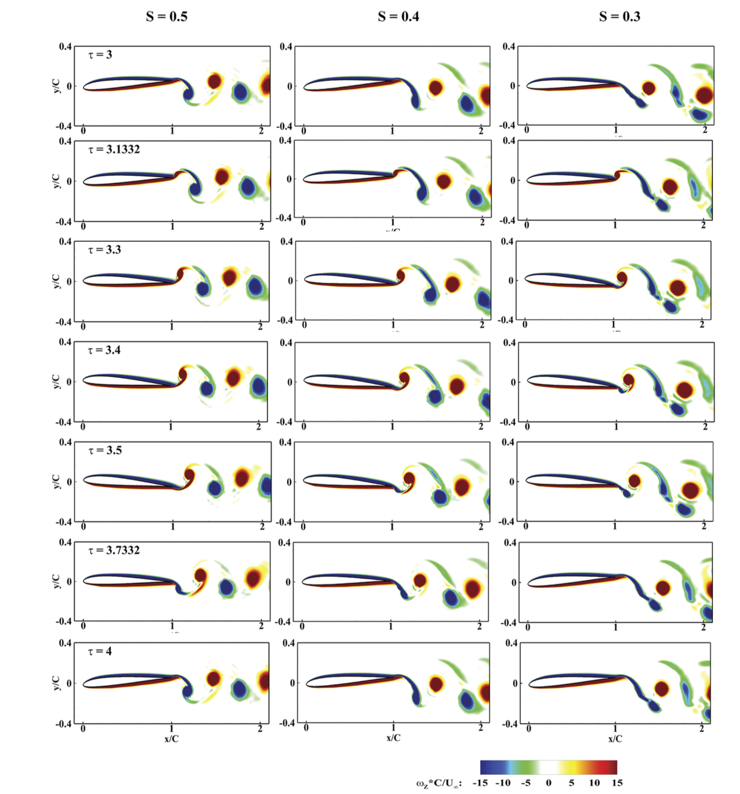

If you've ever watched a bird or an insect dart through the air with impossible agility, you've witnessed the pinnacle of unsteady aerodynamics. For decades, engineers have been trying to replicate this "flapping" magic for Micro-Air Vehicles (MAVs) and Unmanned Aerial Vehicles (UAVs). But as it turns out, the secret to better lift and thrust might not be in perfectly sinusoidal motion — it's in getting a little weird with the timing.
A collaborative research I published in 2020 "Investigation of asymmetrically pitching airfoil at high reduced frequency" dives deep into how asymmetrically pitching airfoils behave when they are pushed to high frequencies. Let's break down why this research is a important for the next generation of tiny drones.
We looked at the SD7003 airfoil, a classic choice for low-speed (low Reynolds number) flight. We weren't just looking at gentle wobbles; we investigated high reduced frequencies (k > 3) and two specific Reynolds numbers: 3000 and 10000.
In standard flight, we mostly think about circulatory lift — the lift generated by the flow of air around the wing's shape. However, at high pitching frequencies, the rules change. The study found that non-circulatory lift becomes the dominant force.
"The non-circulatory lift is directly proportional to the angular acceleration of the airfoil... as the reduced frequency (k) increases, the magnitude of acceleration of the airfoil increases tremendously."
Essentially, because the wing is accelerating so fast (∼k2), the "added mass" of the air being pushed around generates more lift than the actual aerodynamic part of the flow. At k = 9, the viscous effects of the wake barely even matter for lift generation — it's all about the inertia.
One of the most striking findings was how the asymmetry parameter (S) affects performance. When the airfoil pitches up faster than it pitches down (S = 0.3), the results are dramatic:
| Parameter | Symmetric (S = 0.5) | Asymmetric (S = 0.3) |
|---|---|---|
| Thrust Coefficient (CT) | Standard Base | 2-3x Increase |
| Vortex Pattern | Standard Pairs | Multiple Clock-wise Vortices |
| Lift Peaks | Moderate | Massively High |
You might think that at such low speeds, changing the Reynolds number from 3000 to 10000 would completely change the physics. Surprisingly, for lift at high frequencies (k = 9), the difference was negligible. However, drag still cares about Re—at lower frequencies (k = 3), Re = 3000 shows much higher drag due to viscous effects.
The study used Fast Fourier Transformation (FFT) to analyze the pressure signals around the airfoil. We found that in areas unaffected by the boundary layer, the flow frequency (k*) perfectly matches the airfoil's pitching frequency (k).
But in the wake? It's a party. For S = 0.3, the slow pitch-down cycle allows the boundary layer to roll up into two separate clockwise vortices instead of just one. This complex vortex shedding is exactly what leads to those massive boosts in thrust.

If we want our future MAVs to fly like nature intended, we need to stop thinking about perfect symmetry. Our team has shown that asymmetric pitching at high frequencies can provide the extra muscle needed for efficient, high-performance flight in the MAV-world.
For a deep dive into the data and methodology, you can explore my published work: